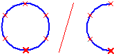

Circular Pattern command (ordered sketch)
The Home tab→Feature group→Circular Pattern command  draws a circular pattern profile, which is used to define how a selected element
is patterned. A circular pattern profile consists of the circle or arc and x shaped
symbols that represent the positions of the patterned features. You can specify the
radial spacing, the radial count, the size of the circle or arc, and any pattern occurrences
you want to suppress.
draws a circular pattern profile, which is used to define how a selected element
is patterned. A circular pattern profile consists of the circle or arc and x shaped
symbols that represent the positions of the patterned features. You can specify the
radial spacing, the radial count, the size of the circle or arc, and any pattern occurrences
you want to suppress.

For more in-depth information on working with rectangular and circular patterns, see the Pattern command (ordered) topic.
A Pattern profile is the same as any other profile in Solid Edge, you must apply relationships and dimensions so it will behave predictably.